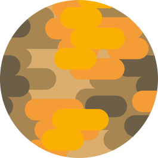
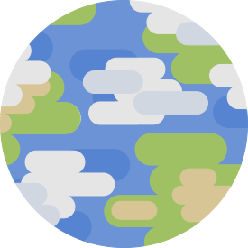
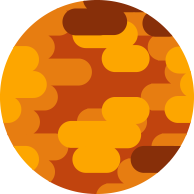
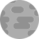
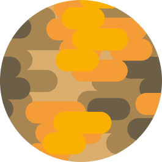
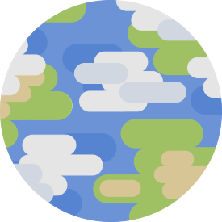
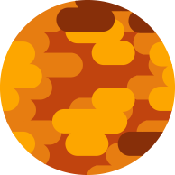
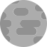


 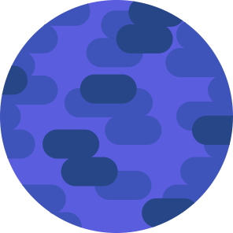
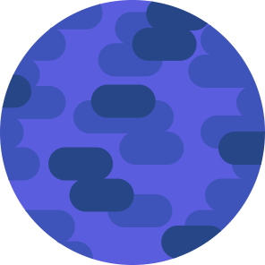


Like most solar system models, this isn't an acurate representation. Distances and planets aren't to scale. If that's what you're looking for, checkout this video about a man building a model in the desert.
To learn more about the solar system, watch this video and this video. These two videos inspired much of my website.
The source for the data bottom can be found at the buttom of the sidebar.
For the sources of the images check the alt tags in the html.
The music is by TheSecession and the song is called Nova.
For questions, suggestions and critique you can reach me at this adress.
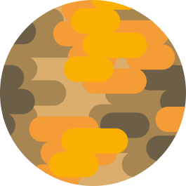
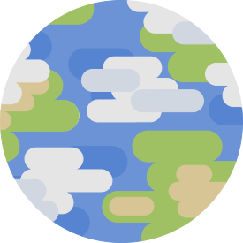
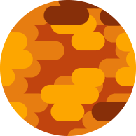
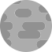
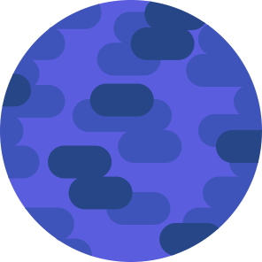